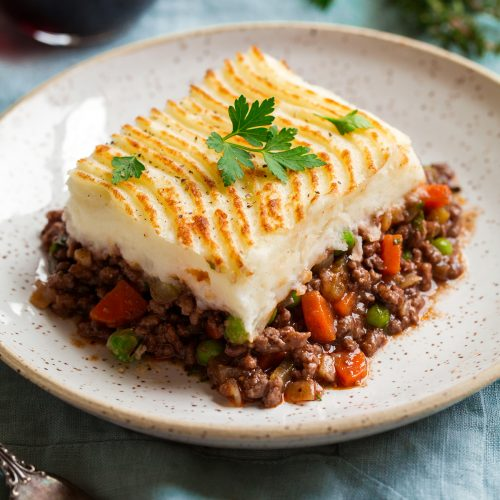

Shepherd's Pie

Description
Ground beef (or lamb) with vegetables in a rich gravy, topped with cheesy mashed potatoes and baked.
Ingredients
Meat Filling:
- 2 tablespoons olive oil
- 1 cup chopped yellow onion
- 1 lb. 90% lean ground beef (or ground lamb>
- 2 teaspoons dried parsley leaves
- 1 teaspoon dried rosemary leaves
- 1 teaspoon dried thyme leaves
- 1/2 teaspoon salt
- 1/2 teaspoon ground black pepper
- 1 tablespoon Worcestershire sauce
- 2 garlic cloves
- 2 tablespoons all purpose flour
- 2 tablespoons tomato paste
- 1 cup beef broth
- 1 cup frozen mixed peas and carrots
- 1/2 cup frozen corn
Potato Topping:
- 1 1/2 - 2 lb russet potatoes (cut into 1 inch cubes)
- 8 tablespoons unsalted butter
- 1/3 cup half-and-half
- 1/2 teaspoon garlic powder
- 1/2 teaspoon salt
- 1/4 teaspoon ground black pepper
- 1/4 cup parmesan cheese
Steps
Make the meat filling
- Add the oil to a large skillet and place it over medium-high heat for 2 minutes. Add the onions. Cook 5 minutes, stirring occasionally.
- Add the ground beef (or ground lamb) to the skillet and break it apart with a wooden spoon. Add the parsley, rosemary, thyme, salt, and and pepper. Stir well. Cook for 6-8 minutes, until the meat is browned, stirring occasionally.
- Add the Worcestershire sauce and garlic. Stir to combine. Cook for 1 minute.
- Add the flour and tomato paste. Stir until well incorporated and no clumps of tomato paste remain.
- Add the broth, frozen peas and carrots, and frozen corn. Bring the liquid to a boil then reduce to simmer. Simmer for 5 minutes, stirring occasionally.
- Set the meat mixture aside. Preheat oven to 400 degrees F.
Make the potato topping
- Place the potatoes in a large pot. Cover the potatoes with water. Bring the water to a boil. Reduce to a simmer. Cook until potatoes are fork tender, 10-15 minutes.
- Drain the potatoes in a colander. Return the potatoes to the hot pot. Let the potatoes rest in the hot pot for 1 minute to evaporate any remaining liquid.
- Add butter, half & half, garlic powder, salt, and pepper. Mash the potatoes and stir until all the ingredients are mixed together.
- Add the parmesan cheese to the potatoes. Stir until well combined.
Assemble the pie
- Pour the meat mixture into a 9x9 (or 7x11) inch baking dish. Spread it out into an even layer. Spoon the mashed potatoes on top of the meat. Carefully spread into an even layer.
- If the baking dish looks very full, place it on a rimmed baking sheet so that the filling doesn’t bubble over into your oven. Bake uncovered for 25-30 minutes. Cool for 15 minutes before serving.
Nutrition
Serving: 1/6th of the recipe | Calories: 400kcal | Carbohydrates: 13g | Protein: 19g | Fat: 30g | Saturated Fat: 15g | Cholesterol: 97mg | Sodium: 751mg | Potassium: 483mg | Fiber: 2g | Sugar: 2g | Vitamin A: 2860IU | Vitamin C: 7.9mg | Calcium: 99mg | Iron: 2.7mg
Return home